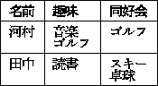
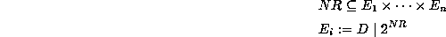

関係モデルの欠点は、第1正規形という単純な形でしかデータを表現できない 点である。この改良提案が2つの面からからなされている。

のようにすればごく自然な表現にできるというのが基本的な考え方である。
このモデルは一般的には

と定義できる。つまり、値が集合値を持っていたり属性が階層構造をなしてい るデータモデルである。このモデルの長所は、表現が素直にできること(表現 の効率性)、また関係の分割が少ないために結合演算が少なくてすみ、処理の 効率化が可能になる点である。
当初 non-first-normal-form (NF) relation とか、さまざまな名前で呼 ばれていたが、1986年に nested relation と呼ぶことでほぼ国際的なコンセ ンサスがとれたが、unnormalize relation と区別すべきだという意見も根強 くある。日本語では、nested に対する良い訳語がないために、「非正規関係 モデル」と呼ぶことが多い。本マニュアルでもそのように呼ぶことにする。